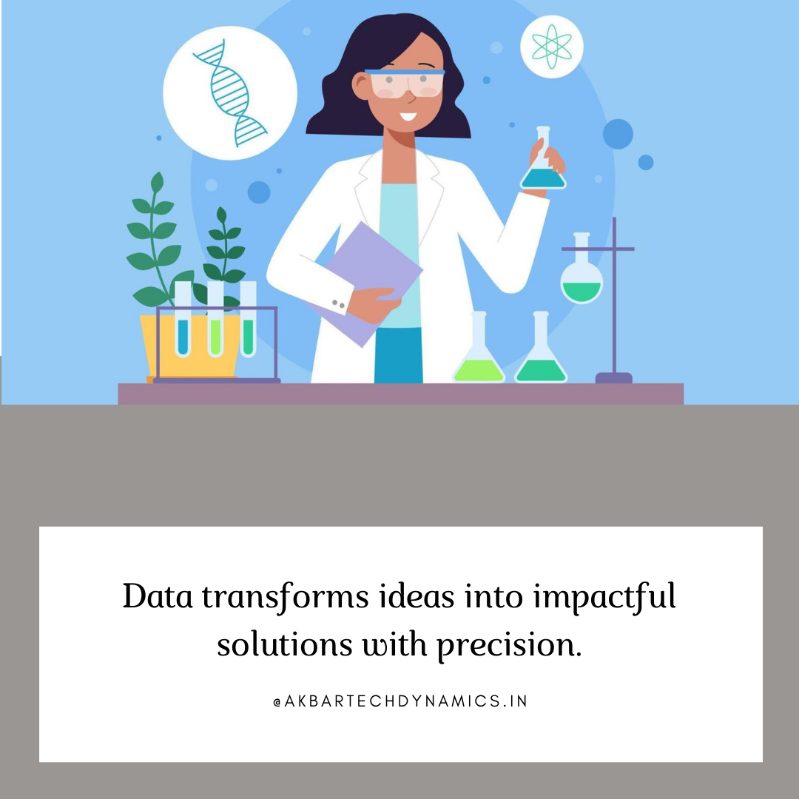

<html lang="en"></html>

<head>
  <meta charset="utf-8">
  <meta content="width=device-width, initial-scale=1.0" name="viewport">
  <title>AkbarTechDynamics</title>
  <meta content="Discover how our data science experts assist you from ideation to execution at every step of your project. Learn more about our comprehensive support for data-driven success." name="description">
  <meta content="web applications, AI, ML, data science, business growth solutions" name="keywords">
  <link href="assets/img/oMkMZZ01.svg" rel="icon"> 
  <link href="assets/img/oMkMZZ01.svg" rel="apple-touch-icon">
  <link href="https://fonts.googleapis.com" rel="preconnect">
  <link href="https://fonts.gstatic.com" rel="preconnect" crossorigin>
  <link href="https://fonts.googleapis.com/css2?family=Roboto:ital,wght@0,100;0,300;0,400;0,500;0,700;0,900;1,100;1,300;1,400;1,500;1,700;1,800;1,900&family=Poppins:ital,wght@0,100;0,200;0,300;0,400;0,500;0,600;0,700;0,800;0,900&display=swap" rel="stylesheet">
  <link href="assets/vendor/bootstrap/css/bootstrap.min.css" rel="stylesheet">
  <link href="assets/vendor/bootstrap-icons/bootstrap-icons.css" rel="stylesheet">
  <link href="assets/vendor/aos/aos.css" rel="stylesheet">
  <link href="assets/vendor/glightbox/css/glightbox.min.css" rel="stylesheet">
  <link href="assets/vendor/swiper/swiper-bundle.min.css" rel="stylesheet">
  <link href="assets/css/main.css" rel="stylesheet">
  <link rel="canonical" href="https://akbartechdynamics.in/blog19-details.html">
  <meta property="og:title" content="AkbarTechDynamics">
  <meta property="og:description" content="Innovative solutions for business growth, specializing in web applications, AI, ML, and data science.">
  <meta property="og:image" content="https://akbartechdynamics.in/assets/img/oMkMZZ01.svg">
  <meta property="og:url" content="https://akbartechdynamics.in/">
  <script type="application/ld+json">
  {
    "@context": "https://schema.org",
    "@type": "Organization",
    "name": "AkbarTechDynamics",
    "url": "https://akbartechdynamics.in",
    "logo": "https://akbartechdynamics.in/assets/img/oMkMZZ01.svg",
    "contactPoint": {
      "@type": "ContactPoint",
      "telephone": "+91 73370 90600",
      "contactType": "Customer Service"
    },
    "sameAs": [
      "https://www.linkedin.com/in/akbar-pasha-mohammad-68b817140",
      "https://www.instagram.com/akbartechdynamics"
    ]
  }
  </script>

</head>

<body class="index-page">
  <header id="header" class="header d-flex align-items-center fixed-top">
    <div class="container-fluid container-xl position-relative d-flex align-items-center">
      <a href="index.html" class="logo d-flex align-items-center me-auto">
        
        <h1 class="sitename">AkbarTechDynamics</h1>
      </a>
      <nav id="navmenu" class="navmenu">
        <ul>
          <li><a href="index.html">Home</a></li>
          <li><a href="index.html#about">About Us</a></li>
          <li><a href="index.html#services">Services</a></li>
          <li><a href="index.html#contact">Contact</a></li>
          <li><a href="blogs.html">Blog</a></li>
          <li><a href="careers.html">Careers</a></li>
          <li><a href="portfolio.html">Portfolio</a></li>
        </ul>
        <i class="mobile-nav-toggle d-xl-none bi bi-list"></i>
      </nav>
    </div>
  </header>

  <main class="main">
    <!-- Page Title -->
    <div class="page-title">
      <div class="heading">
        <div class="container">
          <div class="row d-flex justify-content-center text-center">
            <div class="col-lg-8">
              <h1>Blog Details</h1>
              <p class="mb-0">Welcome to AkbarTech Dynamics! We're Here to Help You Ace Your Academic Projects with Cutting-Edge Technology and Personalized Solutions. Let's Innovate Together!</p>
            </div>
          </div>
        </div>
      </div>
    </div><!-- End Page Title -->

    <div class="container">
      <div class="row">
        <div class="col-lg-8">
          <!-- Blog Details Section -->
          <section id="blog-details" class="blog-details section">
            <div class="container">
              <article class="article">
                <h2 class="title">From Ideation to Execution, Our Data Science Experts Are Here to Assist You at Every Step of Your Project</h2>
                <div class="meta-top">
                  <ul>
                    <li class="d-flex align-items-center"><i class="bi bi-person"></i> <a href="#">Akbar Pasha</a></li>
                    <li class="d-flex align-items-center"><i class="bi bi-clock"></i> <a href="#"><time datetime="2024-09-10">Sep 10, 2024</time></a></li>
                  </ul>
                </div><!-- End meta top -->

                <div class="content">
                  <h3>Introduction</h3>
                  <p>Data science projects are complex endeavors that require expertise, strategic planning, and meticulous execution. Whether you’re a student tackling a research project, a professional looking to harness the power of data, or an organization aiming to drive insights from your data, having the right support is crucial. From ideation to execution, our data science experts are here to assist you at every step of your project. With our comprehensive support, you can navigate the complexities of data science with confidence and achieve data-driven success.</p>
                  <h3>Why Expert Support Is Essential for Data Science Projects</h3>
                  <h4>The Complexity of Data Science Projects</h4>
                  <p>Data science projects often involve multiple stages, including data collection, cleaning, analysis, and visualization. Each stage requires a unique set of skills and tools, and managing these tasks effectively can be daunting, especially for those new to the field. Moreover, the rapid evolution of data science technologies means that staying up-to-date with the latest methods and tools is challenging.</p>
                  <h4>The Importance of Guided Support</h4>
                  <p>Having expert guidance can make a significant difference in the success of your project. From helping you define your research question to choosing the right algorithms and interpreting your results, expert support ensures that you avoid common pitfalls and maximize the impact of your work.</p>
                  <h3>How Our Data Science Experts Assist You at Every Step</h3>
                  <h4>Step 1: Ideation and Project Planning</h4>
                  <p>Every successful data science project begins with a clear idea and a solid plan. Our experts help you at the ideation stage to ensure that your project is grounded in strong objectives and feasible strategies.</p>
                  <p><b>Defining the Research Question: </b>We help you refine your project idea into a specific, actionable research question that aligns with your goals and data availability.</p>
                  <p><b>Project Scoping: </b>Our experts assist in scoping your project, defining the scope, objectives, deliverables, and timeline, ensuring that all stakeholders are on the same page.</p>
                  <p><b>Choosing the Right Tools and Technologies: </b>We guide you in selecting the most appropriate data science tools, languages, and technologies that best suit your project needs and objectives.</p>
                  <h4>Step 2: Data Collection and Preparation</h4>
                  <p>Data collection and preparation are critical steps in any data science project. Our experts help you gather the right data and prepare it for analysis to ensure accurate and reliable results.</p>
                  <p><b>Data Sourcing: </b>We assist in identifying and sourcing the most relevant and high-quality data sets for your project, whether from public repositories, APIs, or proprietary databases.</p>
                  <p><b>Data Cleaning and Preprocessing: </b>Our team helps you clean and preprocess your data, removing errors, handling missing values, and transforming data into a suitable format for analysis.</p>
                  <p><b>Feature Engineering: </b>We guide you in developing new features from your data that can improve model performance and enhance insights.</p>
                  <h4>Step 3: Data Analysis and Model Development</h4>
                  <p>The heart of any data science project lies in data analysis and model development. Our experts provide hands-on support in choosing the right analytical methods and building robust models.</p>
                  <p><b>Exploratory Data Analysis (EDA): </b>We help you conduct EDA to uncover initial patterns, trends, and anomalies in your data, guiding the direction of your analysis.</p>
                  <p><b>Algorithm Selection: </b>Our experts assist in selecting the most suitable algorithms for your problem, whether it's regression, classification, clustering, or more advanced techniques like deep learning.</p>
                  <p><b>Model Training and Validation: </b>We provide guidance on training your models, tuning hyperparameters, and validating performance to ensure robust, reliable results.</p>
                  <h4>Step 4: Data Visualization and Communication</h4>
                  <p>Presenting your findings effectively is just as important as the analysis itself. Our data science experts help you create compelling visualizations and communicate your insights clearly.</p>
                  <p><b>Data Visualization: </b>We assist in creating visualizations that effectively communicate your findings, using tools like Python's Matplotlib, Seaborn, or Tableau.</p>
                  <p><b>Dashboard Development: </b>For ongoing projects, we help develop interactive dashboards that provide real-time insights and facilitate data-driven decision-making.</p>
                  <p><b>Report Writing: </b>Our team supports you in writing comprehensive reports that detail your methodology, findings, and recommendations, ensuring that your results are presented in a professional, understandable manner.</p>
                  <h4>Step 5: Deployment and Execution</h4>
                  <p>Once your model is ready, deploying it in a real-world setting is the final and often most challenging step. Our experts provide support to ensure a smooth deployment and execution.</p>
                  <p><b>Model Deployment: </b>We guide you in deploying your models in production environments, whether on-premises or in the cloud, ensuring scalability and reliability.</p>
                  <p><b>Monitoring and Maintenance: </b>Post-deployment, we help set up monitoring systems to track model performance and suggest maintenance strategies to ensure long-term effectiveness.</p>
                  <p><b>Iterative Improvement: </b>Our team provides ongoing support to iterate and improve your models based on new data or changing project requirements.</p>
                  
                  <h3>The Benefits of Working with Our Data Science Experts</h3>
                  <h4>Tailored Guidance for Every Stage</h4>
                  <p>From ideation to execution, our support is tailored to your specific needs. Whether you're a beginner or an experienced data scientist, our experts provide the right level of guidance and support to help you achieve your project goals.</p>
                  <h4>Access to Cutting-Edge Tools and Techniques</h4>
                  <p>Our experts stay updated with the latest tools and techniques in data science. We provide access to advanced resources and methodologies, ensuring that your project benefits from the most current and effective strategies.</p>
                  <h4>Reduced Time and Effort</h4>
                  <p>With our expert guidance, you can avoid common pitfalls and streamline your workflow, reducing the time and effort required to complete your project. This allows you to focus on delivering high-quality results.</p>
                  <h4>Increased Confidence and Success</h4>
                  <p>Having experienced data scientists by your side boosts your confidence and increases your chances of success. Our support helps you navigate complex challenges, ensuring that your project is executed smoothly and effectively.</p>
                  <h3>Success Stories: How Our Experts Have Made a Difference</h3>
                  <h4>Michael T., Data Science Graduate Student</h4>
                  <p>"Working on my thesis project, I was overwhelmed with the amount of data and the complexity of the models I wanted to use. The experts guided me through every step, from data preparation to model deployment. Their support was invaluable, and I was able to complete my project with a high degree of confidence and success."</p>
                  <h4>Laura W., Business Analyst</h4>
                  <p>"I needed to create a predictive model for customer churn but didn't know where to start. The team helped me define my project, choose the right tools, and execute my analysis. The end result was a robust model that provided actionable insights, which greatly benefited my organization."</p>
                  <h3>Getting Started with Our Data Science Support Services</h3>
                  <h4>Step 1: Schedule a Consultation</h4>
                  <p>To begin, schedule a consultation with our data science experts. We'll discuss your project goals, challenges, and how our support can help you succeed.</p>
                  <h4>Step 2: Develop a Customized Support Plan</h4>
                  <p>Based on your consultation, we'll develop a customized support plan that outlines the services and resources you'll need at each stage of your project.</p>
                  <h4>Step 3: Start Your Data Science Journey</h4>
                  <p>With your plan in place, you'll receive ongoing support from our team of experts. From ideation to execution, we're here to assist you at every step of your data science journey.</p>
                  <h3>Conclusion</h3>
                  <p>From ideation to execution, having the right support can make all the difference in the success of your data science project. Our experts provide comprehensive, tailored guidance to help you navigate every step of your journey with confidence. Whether you're just starting out or looking to refine an existing project, we're here to assist you at every turn. Get in touch today to learn how we can help you achieve your data-driven goals with ease and expertise.</p>
                </div><!-- End post content -->
              </article>
            </div>
          </section><!-- /Blog Details Section -->
        </div>

        <div class="col-lg-4 sidebar">
          <div class="widgets-container">
            <!-- Recent Posts Widget -->
            <div class="recent-posts-widget widget-item">
              <h3 class="widget-title">Recent Posts</h3>
              <div id="content-container"></div>
              <div id="recent-posts-content"></div>        <!-- Content from RecentPosts.html will be injected here -->
                <script>
                  document.addEventListener('DOMContentLoaded', function() {
                    fetch('RecentPosts.html')
                    .then(response => {
                      if (!response.ok) {
                        throw new Error('Network response was not ok');
                      }
                      return response.text();
                    })
                    .then(data => {
                      // Create a temporary element to parse HTML
                      let tempDiv = document.createElement('div');
                      tempDiv.innerHTML = data;
                      // Assuming that the content in RecentPosts.html is in a specific element, e.g., <div id="recent-posts-content">
                        let content = tempDiv.querySelector('#recent-posts-content');
                        // Insert the content into the container
                        document.getElementById('content-container').innerHTML = content.innerHTML;
                      })
                      .catch(error => {
                        console.error('There was a problem with the fetch operation:', error);
                      });
                     })
                </script>
            </div>  
          </div>
        </div>  
      </div>
    </div>

    <!-- Faq Section -->
    <section id="faq" class="faq section">
      <!-- Section Title -->
      <div class="container section-title" data-aos="fade-up">
        <p>Frequently Asked Questions</p>
      </div><!-- End Section Title -->
      <div class="container">
        <div class="row">
          <div class="col-lg-6" data-aos="fade-up" data-aos-delay="100">
            <div class="faq-container">
              <div class="faq-item faq-active">
                <h3>How do you support data science projects from ideation to execution?</h3>
                <div class="faq-content">
                  <p>We provide comprehensive support at every stage of your data science project, including ideation, data collection, analysis, visualization, and deployment. Our experts offer tailored guidance and resources to help you achieve your goals.</p>
                </div>
                <i class="faq-toggle bi bi-chevron-right"></i>
              </div><!-- End Faq item-->
              <div class="faq-item">
                <h3>Can you help me choose the right tools and technologies for my project?</h3>
                <div class="faq-content">
                  <p>Absolutely. Our experts are well-versed in a variety of data science tools and technologies. We'll help you select the most appropriate ones based on your project requirements and objectives.</p>
                </div>
                <i class="faq-toggle bi bi-chevron-right"></i>
              </div><!-- End Faq item-->
              <div class="faq-item">
                <h3>What if I need help with data visualization and communication?</h3>
                <div class="faq-content">
                  <p>We offer support in creating effective data visualizations and developing clear, comprehensive reports. Our experts help you communicate your findings in a way that is both engaging and understandable.</p>
                </div>
                <i class="faq-toggle bi bi-chevron-right"></i>
              </div><!-- End Faq item-->
            </div>
          </div><!-- End Faq Column-->
          <div class="col-lg-6" data-aos="fade-up" data-aos-delay="200">
            <div class="faq-container">
              <div class="faq-item">
                <h3>Are your services suitable for beginners in data science?</h3>
                <div class="faq-content">
                  <p>Yes, our services are designed to support all levels, from beginners to advanced practitioners. We provide the right level of guidance and resources based on your experience and project needs.</p>
                </div>
                <i class="faq-toggle bi bi-chevron-right"></i>
              </div><!-- End Faq item-->
              <div class="faq-item">
                <h3>How do I get started with your data science support services?</h3>
                <div class="faq-content">
                  <p>To get started, schedule a consultation with our team. We'll discuss your needs and create a customized plan to provide the support you need for your data science project.</p>
                </div>
                <i class="faq-toggle bi bi-chevron-right"></i>
              </div><!-- End Faq item-->
              <div class="faq-item">
                <h3>Do you offer ongoing support after the project is completed?</h3>
                <div class="faq-content">
                  <p>Yes, we offer ongoing support to help you maintain and improve your models post-deployment. Our team is available to assist with monitoring, maintenance, and iterative improvement.</p>
                </div>
                <i class="faq-toggle bi bi-chevron-right"></i>
              </div><!-- End Faq item-->
            </div>
          </div><!-- End Faq Column-->
        </div>
      </div>
    </section><!-- /Faq Section -->
  </main>

  <footer id="footer" class="footer">
    <div class="container footer-top">
      <div class="row gy-4">
        <div class="col-lg-4 col-md-6 footer-about">
          <a href="#" class="d-flex align-items-center">
            <span class="sitename">AkbarTechDynamics</span>
          </a>
          <div class="footer-contact pt-3">
            <p>Khammam</p>
            <p>Telanagana, IN 507003</p>
            <p class="mt-3"><strong>Phone:</strong> <span>+91 73370 90600</span></p>
            <p><strong>Email:</strong> <span>akbartechdynamics@gmail.com</span></p>
          </div>
        </div>
        <div class="col-lg-4 col-md-12">
          <h4>Follow Us</h4>
          <p>For more Updates On Trainings/Internships/JOB Opportunities</p>
          <div class="social-links d-flex">
            <a href="https://www.instagram.com/akbartechdynamics?igsh=MXNtcHJqbnJseWU0dw%3D%3D&utm_source=qr" target="_blank"><i class="bi bi-instagram"></i></a>
            <a href="https://www.linkedin.com/in/akbar-pasha-mohammad-68b817140?lipi=urn%3Ali%3Apage%3Ad_flagship3_profile_view_base_contact_details%3B8KxVN2vEQw2TBM5io%2F00OA%3D%3D" target="_blank"><i class="bi bi-linkedin"></i></a>
          </div>
        </div>
      </div>
    </div>
  </footer>

  <a href="#" id="scroll-top" class="scroll-top d-flex align-items-center justify-content-center"><i class="bi bi-arrow-up-short"></i></a>
  <script src="assets/vendor/bootstrap/js/bootstrap.bundle.min.js"></script>
  <script src="assets/vendor/php-email-form/validate.js"></script>
  <script src="assets/vendor/aos/aos.js"></script>
  <script src="assets/vendor/glightbox/js/glightbox.min.js"></script>
  <script src="assets/vendor/purecounter/purecounter_vanilla.js"></script>
  <script src="assets/vendor/imagesloaded/imagesloaded.pkgd.min.js"></script>
  <script src="assets/vendor/isotope-layout/isotope.pkgd.min.js"></script>
  <script src="assets/vendor/swiper/swiper-bundle.min.js"></script>
  <script src="assets/js/main.js"></script>
</body>

</html>